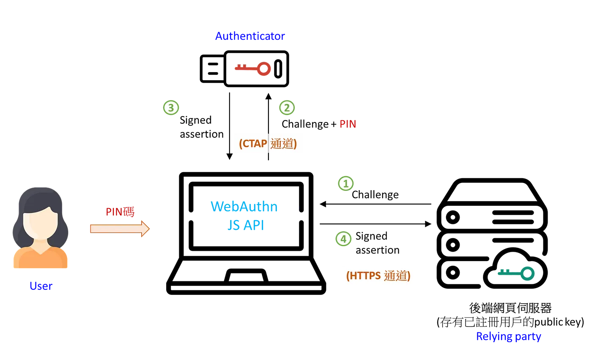

Google、Apple、微軟及數百間科技公司或服務商在今年 (2022) 不約而同的表態支持 FIDO 聯盟與 W3C 所主推的通用無密碼登入標準 (common passwordless sign-in standard)，希望能透過例如指紋、Face ID等認證手段替代原本的密碼登入機制，提供用戶在網頁登入時一個更安全、防網路釣魚、即時交易驗證的登入方式。
Google 在今年10月上旬宣布在 Android 及 Chrome 導入 Passkey 無密碼認證機制，而 Apple 也將在 iOS 16 和 macOS Ventura 引入 Passkey ，透過掃描 QR Code 加上藍芽或其他裝置通訊技術，讓你可以透過手機的 Touch ID 或 Face ID 就可以登入你所有的電腦、平板等裝置。
下面我們會先說明需要使用密碼跟無密碼認證使用的場景，再深入介紹實務上使用 FIDO2 進行註冊與認證 (含範例程式)，最後再總結 FIDO2 / WebAuthn 與 Passkey 的關係 。
 Photo by regularguy.eth on Unsplash
Photo by regularguy.eth on Unsplash
通常需要用到 ”密碼” 或 ”認證” 的場合，像是在電商網站買東西、下訂單最後要結帳的時候會請你輸入帳號、密碼做登入(不登入的話也可能會要求你透過手機簡訊驗證碼做實名制驗證)，可以用以確保您在真實世界的身分。
在資訊安全的領域中，不管是帳號密碼或是手機簡訊驗證碼的驗證，都是屬於 挑戰回應(Challenge/Response) 的方法。
挑戰回應 的方法具體來說，是指由正在溝通的兩方其中之一發起一個 挑戰 (Challenge)，而另一方提供一個正確可被驗證的合法答案 (Response)。
最常見的使用情境就是使用密碼驗證，比方說在電商網站購物前送出訂單之前請買家在網頁上再輸入一次密碼，如果密碼正確 (Valid response) ，則可以確認是由本人進行的操作。
但使用密碼作為驗證手段所衍生出的資安議題非常多，比方說網站管理者可能為了安全性而要求用戶使用的密碼複雜度必須足夠，但過於複雜的密碼常常會讓使用者記不起來，所以就寫在便條紙、記在手機備忘錄或存在檔案中，造成密碼洩漏的問題，而這也是 Apple, Google 及 Microsoft 三大廠商都主推無密碼認證的原因之一。
而在Web端要達到去密碼化，主要使用的解決方案還是透過 W3C 與 FIDO 聯盟所提出的 Web Authentication API (aka WebAuthn) 規範，而 WebAuthn 主要是使用密碼學中的非對稱性演算法與公私鑰取代密碼來進行訊息保密與驗證來完成 Challenge / Response 的機制。
使用者在 APP 或瀏覽器端會產生一組公/私鑰，私鑰會保留在使用的裝置上(如瀏覽器或手機裝置的 keychain 中)，而公鑰會透過 Attestation 的流程註冊到網站伺服器端，網站伺服器收到後會儲存下來，後續在跟用戶端進行訊息傳送時就會使用這對公/私鑰來進行訊息保密與驗證。
註: 想了解關於非對稱式加密演算法或公/私鑰的概念，可以參考:
Passkey
由三大巨頭主推的 Passkey 讓您可以透過您現在解鎖手機的方法，像是 Touch ID、Face ID 等方式來登入網站或 App。
您只需要使用您的生物特徵或PIN碼來啟動裝置上的Authenticator(認證器)，就可以透過安全的密碼簽章來跟網站伺服器溝通，取代原本使用的密碼，就像把家裡的大門從傳統鑰匙的鎖頭換成可以用指紋辨識的電子鎖一樣，不用再帶著鑰匙(密碼)出門了。
而 Passkey 主要是奠基於 FIDO聯盟 與 W3C 所主推的 FIDO2 與 WebAuthn 認證流程，基於這套認證機制，加上了像是掃描 QR Code 等方式，讓您可以使用儲存在手機上的私鑰 (或 credential) ，跨平台登入電腦PC上的網頁，這種跨平台的便利方式相信可以提升原本FIDO2無密碼驗證的使用者體驗，讓無密碼驗證越來越普及。
接下來，就讓我們來介紹一下 FIDO2 與 WebAuthn 吧。
FIDO2 與 WebAuthn
FIDO2是一個去密碼化的認證流程，可以透過裝置上的Authenticator (例如: Touch ID、Face ID 或 USB金鑰)授權後，再經由瀏覽器中的 WebAuthn API 來使用裝置中儲存的私鑰來與網站伺服器端進行註冊或訊息驗證。
 FIDO2 / WebAuthn 認證流程
角色與說明
- Authenticator: 基於密碼學的身分驗證器，像是智慧型手機或USB金鑰等，依照金鑰儲存特性可以區分為 platform 與 cross-platform 兩種，platform 身分驗證器是內嵌在裝置內，比如像是智慧型手機的 Touch ID 或 Face ID 等，而 cross-platform 的身分驗證器則是可以跨裝置使用的，比如像是 USB 金鑰。
- WebAuthn API: 在支援 WebAuthn 的瀏覽器上，我們可以透過 JavaScript 來呼叫 WebAuthn API，WebAuthn API 在收到 來自後端伺服器的挑戰 (challenge) 後，就會透過 CTAP (Client to Authenticator Protocol) 來請求身分驗證器簽署 challenge 並產生合法的回應 (signed assertion) ，後端伺服器收到這個回應後，透過先前註冊的公鑰進行解密與驗證，如果驗證成功即可允許用戶登入或進行操作。
- User: 金鑰的擁有者，在網站透過 WebAuthn API 存取金鑰時，會需要擁有者進行授權的動作，在上面的流程圖中是透過用戶輸入 PIN 碼來取用身分驗證器中的金鑰進行簽署，而其他像是 Touch ID 或 Face ID 也會需要用戶在進行挑戰/回應時刷一下指紋或臉，都是在請求使用者進行授權取用身分驗證器。
- Relying party: 用戶註冊與驗證的後端網站伺服器，用戶註冊時提供的公鑰會儲存在這個伺服器中。
Attestation (Register)
Attestation 在 WebAuthn 的流程中代表的是 Authenticator 金鑰產生並註冊到後端 Relying party 的過程，簡易的流程如下:
- 後端 Relying party (網站伺服器) 產生一組隨機、一次性的 challenge bytes (32 bytes) ，傳送到前端瀏覽器的網頁中。
- 前端的 JavaScript 程式收到 challenge 後，透過 WebAuthn API 存取裝置中或跨裝置的 Authenticator 產生一組 credential (內含一對公/私鑰)，並得到一個 Attestation 物件資料，Attestation 物件中包含簽署 challenge 後的 Assertion 資料與公鑰 (public key) 。
- 前端 JS 程式將 Attestation 資料回傳給後端伺服器 (Relying party) ，伺服器收到後使用公鑰驗證簽署後的 Assertion 資料，確認 challenge 一致後，即可將用戶的公鑰儲存下來，並與用戶的帳號 ID (依網站規劃，通常可以使用手機或email做用戶實名制帳號 ID) 做連結。
範例程式如下:
|
|
說明:
透過使用 Credential Management API，我們可以存取裝置上或外部跨裝置的 Authenticator 來產生一組金鑰 credential。
在上面的範例中，我們呼叫了 navigator.credentials.create () 這個函式，並注入了金鑰產製的相關參數，包含 rp、user、pubKeyCredParams、authenticatorSelection、challenge 與 timeout。
- rp 代表 Relying party ，也就是網站或服務的資訊。
- user 是使用者相關的資訊，包含 id、name 與 displayName，後續在認證過程中會顯示在選單中，讓使用者可以選擇要用哪個身份登入網站。
- pubKeyCredParams 設定 rp 支援的非對稱式金鑰加密演算法列表，裝置authenticator 會在此列表中找尋適合的演算法並產生對應的金鑰。
- authenticatorSelection.authenticatorAttachment 可以指令認證器的形式，您可以選擇 platform / cross-platform，如果使用 platform authenticator 就可以啟用像是 Touch ID 或 Face ID 等裝置內建的認證器，而如果選擇 cross-platform 的話，手機或電腦就會嘗試去尋找是否已經有外接的硬體認證器 (像是 USB硬體認證器)。
- challenge 是由後端伺服器 (Relying party) 所產生的一次性的驗證 token (長度是32 bytes) ，在驗證發生的當下由 Relying party 隨機產生並暫存下來，等後續前端透過認證器簽署完成回傳給 RP，RP端可以使用公鑰進行驗證 (避免 phishing) 。
Assertion (認證)
完成註冊程序以後，在同一個裝置瀏覽這個網站時，即可透過儲存在裝置中的進行登入或交易驗證，簡易的流程如下:
- 後端收到使用者需要進行驗證的交易請求，產生一組跟本次交易有關的一次性隨機的 challenge bytes (32 bytes) ，並傳送到前端網頁中。
- 前端 JavaScript 程式收到 challenge 後，透過 WebAuthn API 存取裝置中或跨裝置的 Authenticator 中的 credential 私鑰對 challenge bytes 進行簽署並產生 assertion 資料物件。
- 將 assertion 物件送到後端伺服器 (Relying party) ，後端伺服器透過儲存的公鑰對 assertion 進行驗證，如驗證無誤即可批准本次交易或登入動作。
範例程式如下:
|
|
說明:
在認證的流程中同樣使用 Credential Management API 來存取裝置上或外部跨裝置的 Authenticator 並簽署 RP 所給的 challenge 參數。
在上面的範例中，我們呼叫了 navigator.credentials.get() 這個函式，並注入了相關參數，包含 rp、challenge 與 allowCredentials 等。
- allowCredentials 是允許使用的 credentials 列表，通常在用戶先前已經登入過但登入 session 已經逾期時，讓用戶再次登入使用，透過這個列表可以限縮用戶可以使用的金鑰，讓用戶在認證時可以簡單的選到想要的登入帳號或身分。
結語: 從 FIDO2 / WebAuthn 到 Passkey
前面提到了 WebAuthn 的註冊與驗證流程，可以發現在現行的 FIDO2 / WebAuthn 的使用上，必須在每個裝置上都註冊一組金鑰 (platform credential) ，但如果使用的是公用電腦或裝置，使用者不會想在上面註冊一組 platform credential 。
這時就得使用跨平台的認證器裝置，像是 USB金鑰 或是其他硬體認證器裝置，除了攜帶不便，也需要這個硬體認證器裝置相容於每台裝置，所以 FIDO2/WebAuthn 在使用上一直沒有很普及。
為了解決使用者體驗不佳的問題並推廣無密碼驗證，包含 Google、Apple及微軟還有其他上百家企業都積極投入 Passkey 這項新的認證機制，而 Passkey 主要就是希望透過瀏覽器、作業系統之間的溝通達到跨平台存取 platform credential，解決目前 FIDO2 / WebAuthn 在實務上使用的痛點。
相信在不久的未來，我們就可以真正拋棄密碼認證方式，使用更安全方便的無密碼認證方法。